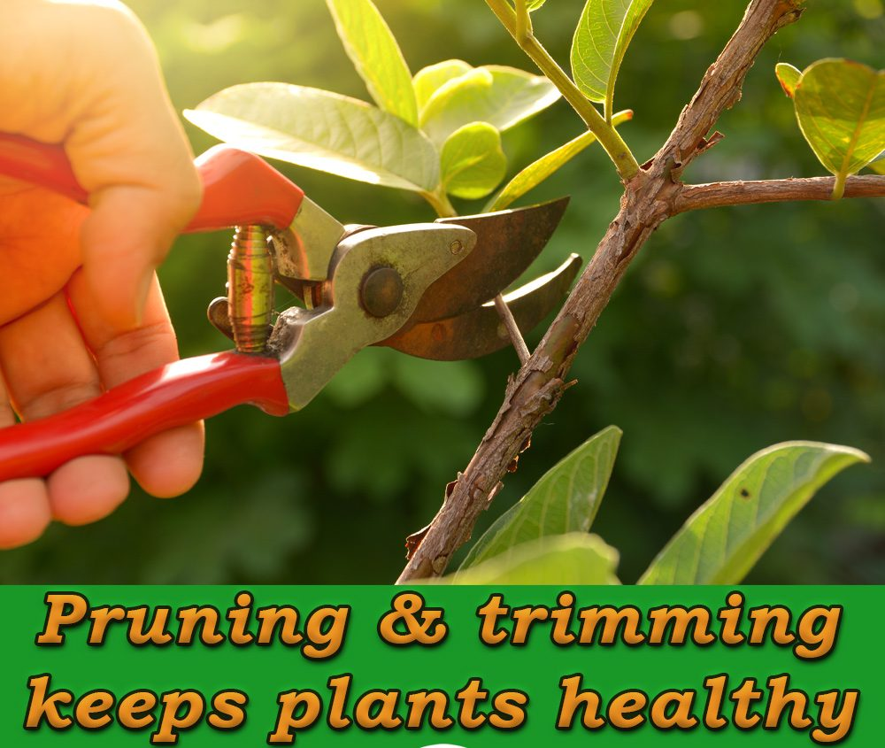

Mature trees provide numerous benefits. Not only in terms of being good for the environment, but on a much smaller scale as well. Their contributions towards counteracting global warming effects are well known. What may be less talked about is how healthy trees not only improve curb appeal, but can increase some other important factors of your home also. Some studies, like this one from Michigan State University, have shown that mature landscaping can increase the value of a home by up to 11%. The key to this contribution is that in order for this to be true, all the trees on your property must be well kempt and in good condition. We can help with that. For an instant boost in your curb appeal, call us, your favorite Barnegat tree company, for any and all necessary tree service.
What Trees Do on a Large Scale
Trees improve our lives in so many ways. Perhaps the biggest, most important way is that trees produce oxygen through a process called photosynthesis. This means that trees basically clean the air for us. They take in carbon dioxide from the air, use it for energy, and release oxygen. According to the USDA “It is proposed that one large tree can provide a day’s supply of oxygen for up to four people.” Basically, we can’t live without them.
In another super feat, they help reduce soil erosion, which in turn helps to prevent flooding. Not only does the canopy of tree tops slow and reduce the impact that rain fall can have on a landscape, but the roots also help to hold dirt in its place. Unprotected land gets pounded by heavy rains. This can, on one hand, compact the soil, making it inhospitable for most grasses and plants. And on the other, it can erode it all away. However, with healthy trees around, according to the National Wildlife Federation “trees lessen the force of storms and reduce the amount of runoff into sewers, streams, and rivers, improving water quality. One hundred mature trees can intercept about 100,000 gallons of rainfall per year.”
Trees Do So Much More
When you have your favorite Barnegat tree company crew at Ben Bivins Tree Experts take care of your trees, you can enjoy the maximum benefits that they have to offer. Aside from the above large scale effects trees have on the environment, they also offer many positive impacts on a much smaller scale. These include things like lower energy bills, added curb appeal, and increased home value. That is just the beginning. However, this is only true if you care for your trees. Unkempt trees can have the equal and opposite effect by possibly causing damage to your home, reducing property value, and risking personal harm.
Healthy Trees Create a Screen
If you are lucky enough to be planting new trees on your property, take some time and really think about their placement. Firstly, consider how the sunlight hits your home during different seasons. Using the shade of a grown mature tree, you can effectively reduce the temperature in your home. With proper tree placement, your home can stay cool all summer without having to run your air conditioning all day. Additionally, trees can be very effective at reducing noise pollution. If you have a busy street on one side of your property, trees can help keep your backyard peaceful. A screen of trees can reduce the sound from the street a noticeable amount. Lastly, visually, trees are much prettier to look at than a brick wall, a highway, or any number of other unsightly things. Planting a number of trees close together can make those unpleasant views go away.

Feeble Trees are a Safety ConcernNeglected trees are not only eye-sores, they can be dangerous. Falling limbs can injure people, damage cars, and destroy landscaping. That being said, who you hire to take care of your Barnegat tree service is highly important. Improper pruning techniques can leave trees vulnerable and weak. This also increases the chances of the risk of damage to property and people. What’s worse is that all this injury is even more possible during periods of high wind. Unfortunately, winds can be extremely strong around here. Only with correct trimming techniques can you maintain the safety and integrity of the tree.
Don’t Underestimate the Power of Trees
As Barnegat tree experts, we know the value of a healthy tree. Occasionally, trees need to be trimmed, pruned, or limbed. This helps to do a number of things. It, for one, reduces stress on the trunk by reducing the weight of the crown. Secondly, the crew can remove dead and damaged limbs and branches. This removes the possibility that they might fall on someone or damage your home. When you schedule your Barnegat tree service with us, you can be sure that our job will be professional, safe, and beautiful when we’re done. We understand the value of healthy trees.